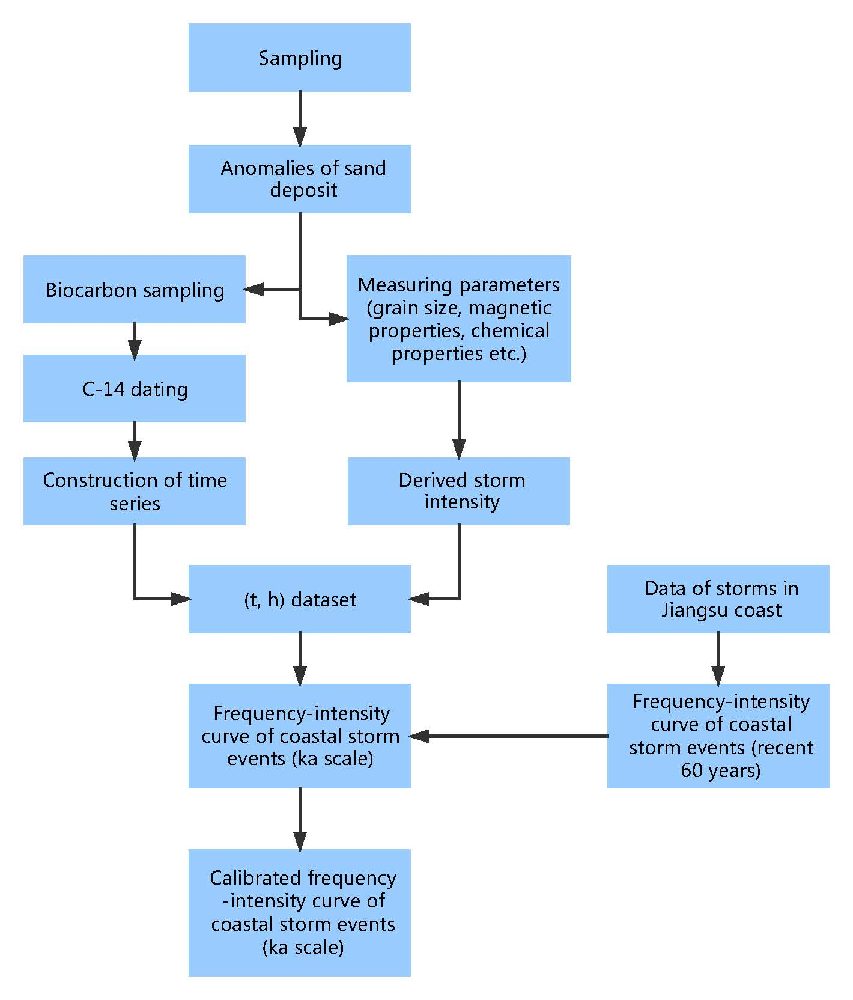

Home CV Research Academics Gallery Contact
Research
Research skills
Lab: grain size analysis (Malvern Mastersizer 2000), elemental analysis (XRFS)
Observation: Garmin GPS, RTK, total station, LISST, ADV, ADCP, OBS, RBR
Geospatial analysis & RS: ArcGIS, ENVI, ERDAS IMAGINE
Programming & statistics: C, HTML, SPSS, Origin
Current Projects
Numerical modeling of sediment carrying capacity (depth-averaged saturated suspended sediment concentration) in shallow coastal seas (Main participant, in collaboration with Dr. Qian YU)Sediment carrying capacity has been widely used in hydraulic engineering by Chinese engineers since 1950s, in order to represent the intensity of fluid-sediment interaction. Most of the previous studies focus on the establishment of empirical formulae, on the basis of in-situ observation data sets acquired in rivers, estuaries and shallow coastal seas. However, there could be difficulties in transplanting such specific formulae to other cases, as well as interpreting the physical processes behind. Hence, it is crucial to figure out the mystery via further numerical studies, based on theory of sediment dynamics.
Sediment particles with a phi number over 2.75 (finer than 148.65μm) meet the condition that their critical friction velocity is no less than their settling velocity. Under this circumstance, sediment particles are carried by the current as suspended load. In our model, based on the assumption of steady uniform flow, sediment carrying capacity of specific sorts of sediment is measured by depth-averaged saturated SSC, and can be derived from numerical calculation. Cohesive and non-cohesive sediments are treated separately.
Currently, numerical calculation and data analysis are in progress. For tentative results, see https://github.com/tonytianzhao/SSC-calculation/files/644192/Tentative.results.pdf. (Dec 11, 2016)
Reconstruction of the return period - intensity relationship for coastal extreme events based on sedimentary record analysis: A case study in Jiangsu coast (Team leader of a provincial undergraduate innovation program, advised by Prof. Shu GAO, in collaboration with PhD candidate Yang YANG)
| Return period of coastal extreme events (e.g. typhoon,
hurricane) works as a critical parameter in coastal engineering.
However, it was usually estimated on the basis of instrument
measurement (up to 100a), leaving a regret that Quaternary
climate change, especially sea-level change, has not yet been
completely considered. By combining high-resolution coastal
sedimentary records and numerical modeling of sediment dynamical
processes, a frequency-intensity curve of coastal extreme events, with a domain on ka scale, can therefore be established. Up till now, the time series of core YC03 has been set up. Analysis of core YC03 is being conducted, on the basis of our previous measurements. |
 Fig.1
Flow chart of the project.
|

Fig.2 Sediment units of core YC01, YC02 & YC03 (by Yang)
(a for AMS C-14 dating results, a* for interpolated chronology)

Fig. 3 Results of YC03's grain size and magnetic analyses
Field work
See Gallery.
Thank you for your attention! Click here to scroll back to the top.